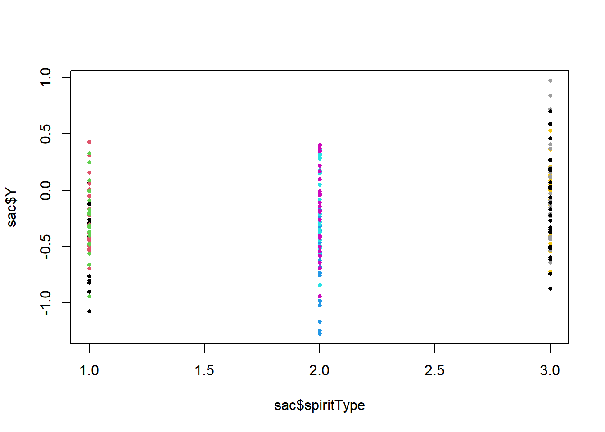
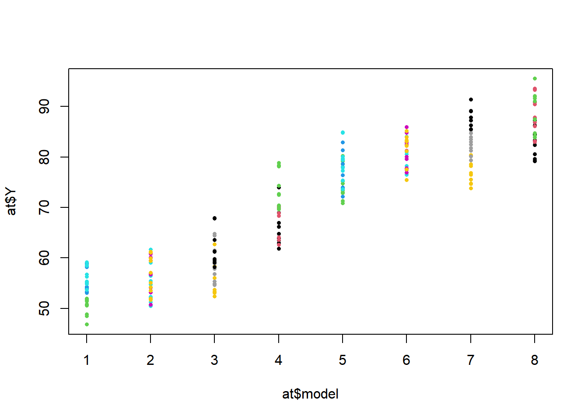
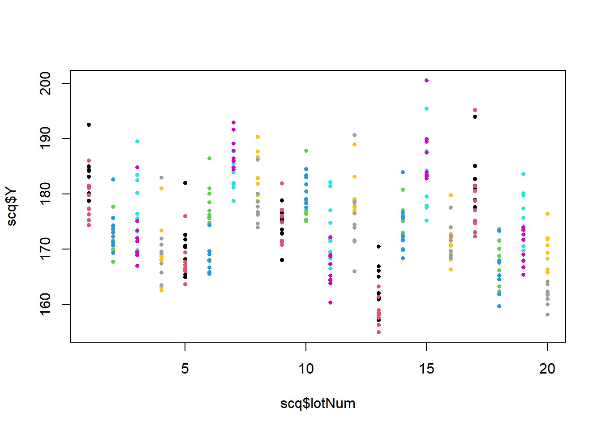

Chapter 12 Nested Designs
So far, factorial designs have contained crossed factors. The levels of factor B were the same within the levels of factor A, and vice versa. In this chapter the levels of factor B will be different under the various levels of factor A, and are said to be nested. These models are often referred to as hierarchical or multilevel.
In a nested model, with factor A at the “top,” the levels of factor B will differ within the levels of factor A. Consider a study to compare NCAA conferences, with the conference as factor A, and schools are factor B, with different schools being in the different conferences (although they are changing constantly).
12.1 Estimators and the Analysis of Variance
The factors can be fixed (all levels included), random (levels are sampled), or mixed (one factor fixed, the other random). We will write out the general model, and whether effects are fixed or random should be clear from the setting of the experiment. In the two-factor balanced design, factor A will have \(a\) levels, within each level of A, factor B will have \(b\) levels, and there will be \(n\) replicates within each of the \(ab\) treatments. The model is given here.
\[ \mbox{Factor A:}\quad \mu_{i\bullet} = \mu_{\bullet\bullet}+\alpha_i \qquad i=1,\ldots,a \] \[ \mbox{Factor B within A:} \quad \mu_{ij}=\mu_{\bullet\bullet}+\alpha_i+\beta_{j(i)} \qquad i=1,\ldots,a; \quad j=1,\ldots,b \] \[ \quad \Rightarrow \quad \beta_{j(i)} = \mu_{ij}-\left(\mu_{\bullet\bullet}+\alpha_i\right)=\mu_{ij}-\mu_{i\bullet} \]
When A and B are both fixed factors, all levels of interest are included and \(\left\{\alpha_i\right\}\) and \(\left\{\beta_{j(i)}\right\}\) are all fixed (unknown) parameters and we can use the following restrictions and model.
\[ \sum_{i=1}^a \alpha_i=0 \qquad \sum_{j=1}^b\beta_{j(i)}=0 \quad i=1,\ldots,a \] \[ Y_{ijk}=\mu_{\bullet\bullet}+\alpha_i+\beta_{j(i)} +\epsilon_{ijk} \qquad i=1,\ldots,a;\quad j=1,\ldots,b; \quad k=1,\ldots,n \] \[ \epsilon_{ijk} \sim NID\left(0,\sigma^2\right) \qquad E\left\{Y_{ijk}\right\}=\mu_{\bullet\bullet}+\alpha_i+\beta_{j(i)} \qquad V\left\{Y_{ijk}\right\}=\sigma^2 \]
When factor A is fixed and factor B is random, the model changes as follows.
\[ \sum_{i=1}^a \alpha_i=0 \qquad \qquad \beta_{j(i)} \sim NID\left(0,\sigma_{\beta(\alpha)}^2\right) \qquad \left\{\beta_{j(i)}\right\} \bot \left\{\epsilon_{ijk}\right\} \] \[ E\left\{Y_{ijk}\right\} = \mu_{\bullet\bullet}+\alpha_i \qquad V\left\{Y_{ijk}\right\} = \sigma_{\beta(\alpha)}^2 + \sigma^2 \] \[ \mbox{COV}\left\{Y_{ijk},Y_{i'j'k'}\right\} = \left\{ \begin{array}{r@{\quad:\quad}l} \sigma_{\beta(\alpha)}^2 + \sigma^2 & i=i',j=j',k=k' \\ \sigma_{\beta(\alpha)}^2 & i=i', j=j',k\ne k' \\ 0 & \mbox{otherwise}\\ \end{array} \right. \]
When factors A and B are both random, the model changes as follows.
\[ \alpha_i\sim NID\left(0,\sigma_{\alpha}^2\right) \qquad \beta_{j(i)} \sim NID\left(0,\sigma_{\beta(\alpha)}^2\right) \qquad \left\{\alpha_i\right\} \bot\left\{\beta_{j(i)}\right\} \bot \left\{\epsilon_{ijk}\right\} \] \[ E\left\{Y_{ijk}\right\} = \mu_{\bullet\bullet} \qquad V\left\{Y_{ijk}\right\} = \sigma_{\alpha}^2+\sigma_{\beta(\alpha)}^2 + \sigma^2 \] \[ \mbox{COV}\left\{Y_{ijk},Y_{i'j'k'}\right\} = \left\{ \begin{array}{r@{\quad:\quad}l} \sigma_{\alpha}^2 + \sigma_{\beta(\alpha)}^2 + \sigma^2 & i=i',j=j',k=k' \\ \sigma_{\alpha}^2 +\sigma_{\beta(\alpha)}^2 & i=i', j=j',k\ne k' \\ \sigma_{\alpha}^2 & i=i',j\ne j', \forall k,k'\\ 0 & i\neq i', \forall j,j', \forall k,k'\\ \end{array} \right. \]
Estimators, fitted values, residuals, sums of squares and expected mean squares are given below.
\[ \hat{\mu}_{\bullet\bullet}=\overline{Y}_{\bullet\bullet\bullet} \qquad \hat{\alpha}_i= \overline{Y}_{i\bullet\bullet}-\overline{Y}_{\bullet\bullet\bullet} \qquad \hat{\beta}_{j(i)} =\overline{Y}_{ij\bullet}-\overline{Y}_{i\bullet\bullet} \] \[ \hat{Y}_{ijk}=\hat{\mu}_{\bullet\bullet}+\hat{\alpha}_i+\hat{\beta}_{j(i)} =\overline{Y}_{ij\bullet} \qquad e_{ijk}=Y_{ijk}-\hat{Y}_{ijk}=Y_{ijk}-\overline{Y}_{ij\bullet} \]
\[ \mbox{Error:} \quad SSE = \sum_{i=1}^a\sum_{j=1}^b\sum_{k=1}^n \left(Y_{ijk}-\overline{Y}_{ij\bullet}\right)^2 \qquad df_E=ab(n-1) \] \[ \mbox{Factor A:} \quad SSA =bn\sum_{i=1}^a \left(Y_{i\bullet\bullet}-Y_{\bullet\bullet\bullet}\right)^2 \qquad df_A =a-1 \] \[ \mbox{Factor B within A:} \quad SSB(A) =n\sum_{i=1}^a\sum_{j=1}^b \left(Y_{ij\bullet}-Y_{i\bullet\bullet}\right)^2 \qquad df_{B(A)} =a(b-1) \]
The expected mean squares depend on whether the factors are fixed or random. In all cases, \(E\{MSE\}=\sigma^2\). When both A and B are fixed, we obtain the following results.
\[ E\{MSA\}=\sigma^2 + \frac{bn\sum_{i=1}^a\alpha_i^2}{a-1} \qquad E\{MSB(A)\} = \sigma^2 + \frac{n\sum_{i=1}^a\sum_{j=1}^b \beta_{j(i)}^2}{a(b-1)} \]
The denominator for the \(F\)-tests for factors A and B in the fixed case is \(MSE\).
When factor A is fixed and factor B is random, the following expected mean squares are obtained.
\[ E\{MSA\}=\sigma^2 + n\sigma_{\beta(\alpha)}^2 + \frac{bn\sum_{i=1}^a\alpha_i^2}{a-1} \qquad E\{MSB(A)\} = \sigma^2 + n\sigma_{\beta(\alpha)}^2 \]
In this mixed case, the error term for factor B is \(MSE\), but the error term for factor A is \(MSB(A)\) due to the covariance structure.
When factors A and B are both random, we obtain the following expected mean squares.
\[ E\{MSA\}=\sigma^2 + n\sigma_{\beta(\alpha)}^2 + bn\sigma_{\alpha}^2 \qquad E\{MSB(A)\} = \sigma^2 + n\sigma_{\beta(\alpha)}^2 \]
The error terms are the same in the random effects case are the same as in the mixed effects case. Variance components can be estimated as in the previous chapter.
12.2 Tests, Contrasts, and Pairwise Comparisons
When both factors are fixed, \(MSE\) is an unbiased estimator of \(V\left\{Y_{ijk}\right\}\) and we can estimate/test contrasts among levels of factor A and B within A.
First, we can test for effects among the levels of factor A.
\[ H_0^A: \alpha_1=\cdots = \alpha_a=0 \qquad TS: F_A^*=\frac{MSA}{MSE} \qquad RR: F_A^* \geq F_{1-\alpha;a-1,ab(n-1)} \] The estimators of the population means for levels of factor A and their properties are given below.
\[ E\left\{\overline{Y}_{i\bullet\bullet}\right\}=\mu_i= \mu_{\bullet\bullet}+\alpha_i \qquad V\left\{\overline{Y}_{i\bullet\bullet}\right\}=\frac{\sigma^2}{bn} \qquad \hat{V}\left\{\overline{Y}_{i\bullet\bullet}\right\}=\frac{MSE}{bn} \] Any contrast among the levels of factor A can be written as follows, with \(\sum_{i=1}^ac_i=0\).
\[ L_A = \sum_{i=1}^ac_i\mu_i \qquad \hat{L}_A=\sum_{i=1}^ac_i \overline{Y}_{i\bullet\bullet} \qquad \hat{V}\left\{\hat{L}_A\right\}=\frac{MSE}{bn}\sum_{i=1}^ac_i^2 \]
\[ (1-\alpha)100\% \mbox{ Confidence Interval for } L_A: \quad \hat{L}_A \pm t_{1-\alpha/2; ab(n-1)}\sqrt{\frac{MSE}{bn}\sum_{i=1}^ac_i^2} \]
\[ \mbox{Tukey's:} \quad HSD=q_{1-\alpha;a,ab(n-1)}\sqrt{\frac{MSE}{bn}} \qquad \mbox{Simultaneous CI's:} \quad \left(\overline{Y}_{i\bullet\bullet}-\overline{Y}_{i'\bullet\bullet}\right) \pm HSD \]
Next, consider inference for factor B when both factors are fixed.
\[ H_0^B(A): \beta_{1(1)}=\cdots = \beta_{b(a)}=0 \qquad TS: F_{B(A)}^*=\frac{MSB(A)}{MSE} \] \[ RR: F_{B(A)}^* \geq F_{1-\alpha;a(b-1),ab(n-1)} \]
\[ E\left\{\overline{Y}_{ij\bullet}\right\}= \mu_{\bullet\bullet}+\alpha_i + \beta_{j(i)} \qquad V\left\{\overline{Y}_{ij\bullet}\right\}=\frac{\sigma^2}{n} \qquad \hat{V}\left\{\overline{Y}_{ij\bullet}\right\}=\frac{MSE}{n} \]
Tukey’s method can be applied to compare the \(b\) means within each level of factor A as well.
\[ HSD_B=q_{1-\alpha;b,ab(n-1)}\sqrt{\frac{MSE}{n}} \qquad \mbox{Simultaneous CI's:} \quad \left(\overline{Y}_{ij\bullet}-\overline{Y}_{ij'\bullet}\right) \pm HSD_B \]
Example 11.1 - Determination of Alcohol Content in Liquor
A study was conducted to measure alcohol content in 3 types of spirits (Oliveira et al. 2017). The researchers bought 3 brands each of Vodka, Whisky, and Cachaca. Factor A with \(a=3\) is the spirit type (Vodka, Whisky, Cachaca). The brands are nested within the spirit types with \(b=3\). Each of the brands \((ab=3(3)=9)\) was measured \(n=24\) times. The response is \(Y\), the difference between the measured alcohol content and the content provided on the bottle’s label. We will treat both factors as fixed in this analysis. Note that the TukeyHSD function does not work well with the nested (brand) factor.
## spiritType brandSprt labelAC alcCntnt
## 1 1 1 37.5 36.81
## 2 1 1 37.5 36.43
## 3 1 1 37.5 37.02
## 4 1 1 37.5 37.38
## 5 1 1 37.5 36.70
## 6 1 1 37.5 36.97## spiritType brandSprt labelAC alcCntnt
## 211 3 9 39 38.89
## 212 3 9 39 38.78
## 213 3 9 39 38.41
## 214 3 9 39 39.27
## 215 3 9 39 39.03
## 216 3 9 39 38.94sac$spiritType.f <- factor(sac$spiritType)
sac$brandSprt.f <- factor(sac$brandSprt)
sac$Y <- sac$alcCntnt - sac$labelAC
plot(sac$Y ~ sac$spiritType, pch=16, col=sac$brandSprt, cex=0.6)
A_mean <- as.vector(tapply(sac$Y, sac$spiritType.f, mean))
BA_mean <- as.vector(tapply(sac$Y, sac$brandSprt.f, mean))
all_mean <- mean(sac$Y)
a <- length(A_mean)
b <- length(BA_mean) / a
n <- length(sac$Y) / (a*b)
Ybar_i.. <- rep(A_mean, each=b*n)
Ybar_ij. <- rep(BA_mean, each=n)
Ybar_... <- rep(all_mean, a*b*n)
SSA <- sum((Ybar_i..-Ybar_...)^2); df_A <- a-1; MSA <- SSA/df_A
SSBA <- sum((Ybar_ij.-Ybar_i..)^2); df_BA <- a*(b-1); MSBA <- SSBA/df_BA
SSE <- sum((sac$Y-Ybar_ij.)^2); df_E <- a*b*(n-1); MSE <- SSE/df_E
SSTO <- sum((sac$Y-Ybar_...)^2); df_TO <- a*b*n-1
aov.out1 <- cbind(df_A,SSA,MSA,MSA/MSE,qf(.95,df_A,df_E),1-pf(MSA/MSE,df_A,df_E),SSA/SSTO, SSA/(SSA+SSE))
aov.out2 <- cbind(df_BA,SSBA,MSBA,MSBA/MSE,qf(.95,df_BA,df_E),
1-pf(MSBA/MSE,df_BA,df_E),SSBA/SSTO,SSBA/(SSBA+SSE))
aov.out3 <- cbind(df_E, SSE, MSE,NA,NA,NA,NA,NA)
aov.out4 <- cbind(df_TO,SSTO,NA,NA,NA,NA,NA,NA)
aov.out <- rbind(aov.out1,aov.out2,aov.out3,aov.out4)
colnames(aov.out) <- c("df","SS","MS","F*","F(.95)","P(>F*)","eta^2", "Part eta^2")
rownames(aov.out) <- c("Type","Brand(Type)","Error","Total")
round(aov.out,4)## df SS MS F* F(.95) P(>F*) eta^2 Part eta^2
## Type 2 3.1967 1.5983 13.2669 3.0395 0 0.0992 0.1136
## Brand(Type) 6 4.0872 0.6812 5.6543 2.1426 0 0.1268 0.1408
## Error 207 24.9385 0.1205 NA NA NA NA NA
## Total 215 32.2224 NA NA NA NA NA NAHSD_A <- qtukey(.95,a,df_E)*sqrt(MSE/(b*n))
HSD_B <- qtukey(.95,b,df_E)*sqrt(MSE/n)
HSD_A.out <- matrix(rep(0,8*a*(a-1)/2), ncol=8)
HSD_B.out <- matrix(rep(0,9*a*b*(b-1)/2), ncol=9)
row_A.count <- 0
row_B.count <- 0
for (i1 in 2:a) {
for (i2 in 1:(i1-1)) {
row_A.count <- row_A.count + 1
HSD_A.out[row_A.count,1] <- i1
HSD_A.out[row_A.count,2] <- i2
HSD_A.out[row_A.count,3] <- A_mean[i1]
HSD_A.out[row_A.count,4] <- A_mean[i2]
HSD_A.out[row_A.count,5] <- A_mean[i1]-A_mean[i2]
HSD_A.out[row_A.count,6] <- (A_mean[i1]-A_mean[i2])-HSD_A
HSD_A.out[row_A.count,7] <- (A_mean[i1]-A_mean[i2])+HSD_A
HSD_A.out[row_A.count,8] <-
1-ptukey(abs((A_mean[i1]-A_mean[i2])/sqrt(MSE/(b*n))),a,df_E)
}
}
colnames(HSD_A.out) <- c("i","i'","Ybar_i","Ybar_i'","Diff","LB","UB","p adj")
round(HSD_A.out,4)## i i' Ybar_i Ybar_i' Diff LB UB p adj
## [1,] 2 1 -0.3062 -0.3037 -0.0025 -0.1391 0.1341 0.999
## [2,] 3 1 -0.0469 -0.3037 0.2568 0.1202 0.3934 0.000
## [3,] 3 2 -0.0469 -0.3062 0.2593 0.1227 0.3959 0.000for (i1 in 1:a) {
for (i2 in ((i1-1)*a+2):((i1-1)*a+b)) {
for (i3 in ((i1-1)*a+1):(i2-1)) {
row_B.count <- row_B.count + 1
HSD_B.out[row_B.count,1] <- i1
HSD_B.out[row_B.count,2] <- i2
HSD_B.out[row_B.count,3] <- i3
HSD_B.out[row_B.count,4] <- BA_mean[i2]
HSD_B.out[row_B.count,5] <- BA_mean[i3]
HSD_B.out[row_B.count,6] <- BA_mean[i2]-BA_mean[i3]
HSD_B.out[row_B.count,7] <- (BA_mean[i2]-BA_mean[i3])-HSD_B
HSD_B.out[row_B.count,8] <- (BA_mean[i2]-BA_mean[i3])+HSD_B
HSD_B.out[row_B.count,9] <-
1-ptukey(abs((BA_mean[i2]-BA_mean[i3])/sqrt(MSE/n)),b,df_E)
}
}
}
colnames(HSD_B.out) <- c("i","j","j'","Ybar_j(i)","Ybar_j'(i)","Diff","LB","UB","p adj")
round(HSD_B.out,4)## i j j' Ybar_j(i) Ybar_j'(i) Diff LB UB p adj
## [1,] 1 2 1 -0.2400 -0.4308 0.1908 -0.0457 0.4274 0.1399
## [2,] 1 3 1 -0.2404 -0.4308 0.1904 -0.0461 0.4270 0.1411
## [3,] 1 3 2 -0.2404 -0.2400 -0.0004 -0.2370 0.2361 1.0000
## [4,] 2 5 4 -0.1388 -0.5892 0.4504 0.2139 0.6870 0.0000
## [5,] 2 6 4 -0.1908 -0.5892 0.3983 0.1618 0.6349 0.0003
## [6,] 2 6 5 -0.1908 -0.1388 -0.0521 -0.2886 0.1845 0.8618
## [7,] 3 8 7 0.0792 -0.0900 0.1692 -0.0674 0.4057 0.2121
## [8,] 3 9 7 -0.1300 -0.0900 -0.0400 -0.2765 0.1965 0.9159
## [9,] 3 9 8 -0.1300 0.0792 -0.2092 -0.4457 0.0274 0.0949## Analysis of Variance Table
##
## Response: Y
## Df Sum Sq Mean Sq F value Pr(>F)
## spiritType.f 2 3.1967 1.59834 13.2669 3.791e-06 ***
## spiritType.f:brandSprt.f 6 4.0872 0.68120 5.6543 1.850e-05 ***
## Residuals 207 24.9385 0.12048
## ---
## Signif. codes: 0 '***' 0.001 '**' 0.01 '*' 0.05 '.' 0.1 ' ' 1## Tukey multiple comparisons of means
## 95% family-wise confidence level
##
## Fit: aov(formula = Y ~ spiritType.f + spiritType.f/brandSprt.f, data = sac)
##
## $spiritType.f
## diff lwr upr p adj
## 2-1 -0.0025000 -0.1390648 0.1340648 0.9989709
## 3-1 0.2568056 0.1202407 0.3933704 0.0000435
## 3-2 0.2593056 0.1227407 0.3958704 0.0000362## # Effect Size for ANOVA (Type I)
##
## Parameter | η² (partial) | 95% CI
## ------------------------------------------------------
## spiritType.f | 0.11 | [0.05, 1.00]
## spiritType.f:brandSprt.f | 0.14 | [0.06, 1.00]
##
## - One-sided CIs: upper bound fixed at [1.00].## # Effect Size for ANOVA (Type I)
##
## Parameter | η² | 95% CI
## ----------------------------------------------
## spiritType.f | 0.10 | [0.04, 1.00]
## spiritType.f:brandSprt.f | 0.13 | [0.05, 1.00]
##
## - One-sided CIs: upper bound fixed at [1.00].There is evidence for differences among the \(a=3\) types of spirits. The differences between measured and reported proofs are significantly higher for Cachaca \((i=3)\) than for Whisky \((i=2)\) and for Vodka \((i=1)\).
There are also differences among brands within spirits types. In particular, brands 5 and 6 (within Whisky) are significantly higher than brand 4. \[\nabla \] When factor A is fixed and B is random, we would like to compare the levels of factor A, and estimate the variance for factor B. The error term for factor A is now \(MSB(A)\) as opposed to \(MSE\).
\[ H_0^A: \alpha_1=\cdots = \alpha_a=0 \qquad TS: F_A^*=\frac{MSA}{MSB(A)} \qquad RR: F_A^* \geq F_{1-\alpha;a-1,a(b-1)} \] The estimators of the population means for levels of factor A and their properties are given below.
\[ E\left\{\overline{Y}_{i\bullet\bullet}\right\}=\mu_i= \mu_{\bullet\bullet}+\alpha_i \qquad V\left\{\overline{Y}_{i\bullet\bullet}\right\}= \frac{\sigma^2+\sigma_{\beta(\alpha)}^2}{bn} \qquad \hat{V}\left\{\overline{Y}_{i\bullet\bullet}\right\}=\frac{MSB(A)}{bn} \]
For Tukey’s method, relative to the fixed effects case, we replace \(MSE\) with \(MSB(A)\) and adjust the degrees of freedom.
\[ HSD = q_{1-\alpha;a,a(b-1)}\sqrt{\frac{MSB(A)}{bn}} \] \[ (1-\alpha)100\% \mbox{ CI for } \quad \alpha_i-\alpha_{i'}: \qquad \left(\overline{Y}_{i\bullet\bullet}-\overline{Y}_{i'\bullet\bullet} \right) \pm HSD \] A point estimate for the variance among the levels of factor A and its corresponding approximate Confidence Interval based on Satterthwaite’s approximation are given below. First, we test whether the variance component for factor B is 0.
\[ H_0^{B(A)}:\sigma_{\beta(\alpha)}^2=0 \qquad TS: F_{B(A)}^*=\frac{MSB(A)}{MSE} \qquad RR: F_{B(A)}^* \geq F_{1-\alpha;a(b-1),ab(n-1)} \] \[ E\{MSB(A)\}=\sigma^2+n\sigma_{\beta(\alpha)}^2 \qquad E\{MSE\}=\sigma^2 \quad \Rightarrow \quad s_{\beta(\alpha)}^2=\frac{MSB(A)-MSE}{n} \] \[ df_{\beta(\alpha)} = \frac{\left(s_{\beta(\alpha)}^2\right)^2}{ \left[\frac{\left(\frac{1}{n}MSB(A)\right)^2}{a(b-1)} + \frac{\left(-\frac{1}{n}MSE\right)^2}{ab(n-1)} \right] } \] \[ \mbox{Approximate } (1-\alpha)100\% \mbox{ CI for } \sigma_{\beta(\alpha)}^2: \quad \left[ \frac{df_{\beta(\alpha)}s_{\beta(\alpha)}^2}{ \chi_{1-\alpha/2; df_{\beta(\alpha)}}^2}, \frac{df_{\beta(\alpha)}s_{\beta(\alpha)}^2}{ \chi_{\alpha/2; df_{\beta(\alpha)}}^2} \right] \]
Example 11.2 - Momentum of Animal Traps
A study compared \(a=8\) models of animal traps in terms of momentum (Cook and Proulx 1989). Within each model, \(b=3\) traps were built. Each trap was measured \(n=10\) times. We will treat the models as a fixed factor, and the traps within models as a random factor (any number could have been assembled for each model). The response measured was the momentum at HDISP (when both jaws displayed half way). The response has been multiplied by 100 to avoid small variance estimates.
## trapGrp model trapModel momentum
## 1 1 1 11 0.51423
## 2 1 1 11 0.53202
## 3 1 1 11 0.51550
## 4 1 1 11 0.46825
## 5 1 1 11 0.48496
## 6 1 1 11 0.51743## trapGrp model trapModel momentum
## 235 24 8 83 0.92003
## 236 24 8 83 0.91039
## 237 24 8 83 0.95544
## 238 24 8 83 0.84232
## 239 24 8 83 0.92145
## 240 24 8 83 0.87547at$model.f <- factor(at$model)
at$trapModel.f <- factor(at$trapModel)
at$Y <- 100*at$momentum
plot(at$Y ~ at$model, pch=16, col=at$trapModel, cex=0.6)
A_mean <- as.vector(tapply(at$Y, at$model.f, mean))
BA_mean <- as.vector(tapply(at$Y, at$trapModel.f, mean))
all_mean <- mean(at$Y)
a <- length(A_mean)
b <- length(BA_mean) / a
n <- length(at$Y) / (a*b)
Ybar_i.. <- rep(A_mean, each=b*n)
Ybar_ij. <- rep(BA_mean, each=n)
Ybar_... <- rep(all_mean, a*b*n)
SSA <- sum((Ybar_i..-Ybar_...)^2); df_A <- a-1; MSA <- SSA/df_A
SSBA <- sum((Ybar_ij.-Ybar_i..)^2); df_BA <- a*(b-1); MSBA <- SSBA/df_BA
SSE <- sum((at$Y-Ybar_ij.)^2); df_E <- a*b*(n-1); MSE <- SSE/df_E
SSTO <- sum((at$Y-Ybar_...)^2); df_TO <- a*b*n-1
aov.out1 <- cbind(df_A,SSA,MSA,MSA/MSBA,qf(.95,df_A,df_BA),1-pf(MSA/MSBA,df_A,df_BA),SSA/SSTO, SSA/(SSA+SSE))
aov.out2 <- cbind(df_BA,SSBA,MSBA,MSBA/MSE,qf(.95,df_BA,df_E),
1-pf(MSBA/MSE,df_BA,df_E),SSBA/SSTO,SSBA/(SSBA+SSE))
aov.out3 <- cbind(df_E, SSE, MSE,NA,NA,NA,NA,NA)
aov.out4 <- cbind(df_TO,SSTO,NA,NA,NA,NA,NA,NA)
aov.out <- rbind(aov.out1,aov.out2,aov.out3,aov.out4)
colnames(aov.out) <- c("df","SS","MS","F*","F(.95)","P(>F*)","eta^2", "Part eta^2")
rownames(aov.out) <- c("Model","Trap(Model)","Error","Total")
round(aov.out,4)## df SS MS F* F(.95) P(>F*) eta^2 Part eta^2
## Model 7 35845.161 5120.7372 48.6523 2.6572 0 0.9013 0.9411
## Trap(Model) 16 1684.028 105.2518 10.1408 1.6905 0 0.0423 0.4290
## Error 216 2241.867 10.3790 NA NA NA NA NA
## Total 239 39771.056 NA NA NA NA NA NAHSD_A <- qtukey(.95,a,df_BA)*sqrt(MSBA/(b*n))
HSD_A.out <- matrix(rep(0,8*a*(a-1)/2), ncol=8)
row_A.count <- 0
for (i1 in 2:a) {
for (i2 in 1:(i1-1)) {
row_A.count <- row_A.count + 1
HSD_A.out[row_A.count,1] <- i1
HSD_A.out[row_A.count,2] <- i2
HSD_A.out[row_A.count,3] <- A_mean[i1]
HSD_A.out[row_A.count,4] <- A_mean[i2]
HSD_A.out[row_A.count,5] <- A_mean[i1]-A_mean[i2]
HSD_A.out[row_A.count,6] <- (A_mean[i1]-A_mean[i2])-HSD_A
HSD_A.out[row_A.count,7] <- (A_mean[i1]-A_mean[i2])+HSD_A
HSD_A.out[row_A.count,8] <-
1-ptukey(abs((A_mean[i1]-A_mean[i2])/sqrt(MSBA/(b*n))),a,df_BA)
}
}
colnames(HSD_A.out) <- c("i","i'","Ybar_i","Ybar_i'","Diff","LB","UB","p adj")
round(HSD_A.out,4)## i i' Ybar_i Ybar_i' Diff LB UB p adj
## [1,] 2 1 55.8800 53.8400 2.0400 -7.1310 11.2110 0.9925
## [2,] 3 1 59.1267 53.8400 5.2866 -3.8843 14.4576 0.5132
## [3,] 3 2 59.1267 55.8800 3.2466 -5.9243 12.4176 0.9124
## [4,] 4 1 68.8299 53.8400 14.9899 5.8189 24.1609 0.0007
## [5,] 4 2 68.8299 55.8800 12.9499 3.7789 22.1209 0.0032
## [6,] 4 3 68.8299 59.1267 9.7033 0.5323 18.8742 0.0342
## [7,] 5 1 77.1966 53.8400 23.3566 14.1856 32.5276 0.0000
## [8,] 5 2 77.1966 55.8800 21.3166 12.1456 30.4876 0.0000
## [9,] 5 3 77.1966 59.1267 18.0700 8.8990 27.2409 0.0001
## [10,] 5 4 77.1966 68.8299 8.3667 -0.8043 17.5377 0.0874
## [11,] 6 1 81.1433 53.8400 27.3033 18.1323 36.4742 0.0000
## [12,] 6 2 81.1433 55.8800 25.2633 16.0923 34.4342 0.0000
## [13,] 6 3 81.1433 59.1267 22.0166 12.8457 31.1876 0.0000
## [14,] 6 4 81.1433 68.8299 12.3134 3.1424 21.4843 0.0051
## [15,] 6 5 81.1433 77.1966 3.9467 -5.2243 13.1176 0.8020
## [16,] 7 1 82.5467 53.8400 28.7066 19.5357 37.8776 0.0000
## [17,] 7 2 82.5467 55.8800 26.6666 17.4957 35.8376 0.0000
## [18,] 7 3 82.5467 59.1267 23.4200 14.2490 32.5910 0.0000
## [19,] 7 4 82.5467 68.8299 13.7167 4.5458 22.8877 0.0018
## [20,] 7 5 82.5467 77.1966 5.3500 -3.8209 14.5210 0.4993
## [21,] 7 6 82.5467 81.1433 1.4034 -7.7676 10.5743 0.9993
## [22,] 8 1 86.8833 53.8400 33.0433 23.8723 42.2143 0.0000
## [23,] 8 2 86.8833 55.8800 31.0033 21.8323 40.1743 0.0000
## [24,] 8 3 86.8833 59.1267 27.7567 18.5857 36.9276 0.0000
## [25,] 8 4 86.8833 68.8299 18.0534 8.8824 27.2244 0.0001
## [26,] 8 5 86.8833 77.1966 9.6867 0.5157 18.8577 0.0346
## [27,] 8 6 86.8833 81.1433 5.7400 -3.4309 14.9110 0.4177
## [28,] 8 7 86.8833 82.5467 4.3367 -4.8343 13.5076 0.7234s2_ba <- (MSBA-MSE)/n
df_ba <- s2_ba^2 / ((MSBA/n)^2/df_BA + (-MSE/n)^2/df_E)
s2_ba_L <- df_ba*s2_ba/qchisq(1-.05/2,df_ba)
s2_ba_U <- df_ba*s2_ba/qchisq(.05/2,df_ba)
s2_L <- SSE/qchisq(1-.05/2,df_E)
s2_U <- SSE/qchisq(.05/2,df_E)
s2.out1 <- cbind(df_ba, s2_ba, s2_ba_L, s2_ba_U)
s2.out2 <- cbind(df_E, MSE, s2_L, s2_U)
s2.out <- rbind(s2.out1, s2.out2)
colnames(s2.out) <- c("df", "s^2", "LB", "UB")
rownames(s2.out) <- c("Trap(Model)", "Error")
round(s2.out,4)## df s^2 LB UB
## Trap(Model) 12.9907 9.4873 4.9852 24.6343
## Error 216.0000 10.3790 8.6693 12.6524## Analysis of Variance Table
##
## Response: Y
## Df Sum Sq Mean Sq F value Pr(>F)
## model.f 7 35845 5120.7 493.374 < 2.2e-16 ***
## model.f:trapModel.f 16 1684 105.3 10.141 < 2.2e-16 ***
## Residuals 216 2242 10.4
## ---
## Signif. codes: 0 '***' 0.001 '**' 0.01 '*' 0.05 '.' 0.1 ' ' 1options(contrasts=c("contr.sum", "contr.poly"))
mod2 <- lmer(Y ~ model.f + (1|model.f:trapModel.f), data=at)
summary(mod2)## Linear mixed model fit by REML. t-tests use Satterthwaite's method [
## lmerModLmerTest]
## Formula: Y ~ model.f + (1 | model.f:trapModel.f)
## Data: at
##
## REML criterion at convergence: 1269.7
##
## Scaled residuals:
## Min 1Q Median 3Q Max
## -1.92671 -0.74501 -0.08267 0.72379 2.48273
##
## Random effects:
## Groups Name Variance Std.Dev.
## model.f:trapModel.f (Intercept) 9.487 3.080
## Residual 10.379 3.222
## Number of obs: 240, groups: model.f:trapModel.f, 24
##
## Fixed effects:
## Estimate Std. Error df t value Pr(>|t|)
## (Intercept) 70.6808 0.6622 16.0000 106.731 < 2e-16 ***
## model.f1 -16.8408 1.7521 16.0000 -9.612 4.75e-08 ***
## model.f2 -14.8008 1.7521 16.0000 -8.447 2.72e-07 ***
## model.f3 -11.5542 1.7521 16.0000 -6.594 6.17e-06 ***
## model.f4 -1.8509 1.7521 16.0000 -1.056 0.30648
## model.f5 6.5158 1.7521 16.0000 3.719 0.00187 **
## model.f6 10.4625 1.7521 16.0000 5.971 1.96e-05 ***
## model.f7 11.8658 1.7521 16.0000 6.772 4.48e-06 ***
## ---
## Signif. codes: 0 '***' 0.001 '**' 0.01 '*' 0.05 '.' 0.1 ' ' 1
##
## Correlation of Fixed Effects:
## (Intr) mdl.f1 mdl.f2 mdl.f3 mdl.f4 mdl.f5 mdl.f6
## model.f1 0.000
## model.f2 0.000 -0.143
## model.f3 0.000 -0.143 -0.143
## model.f4 0.000 -0.143 -0.143 -0.143
## model.f5 0.000 -0.143 -0.143 -0.143 -0.143
## model.f6 0.000 -0.143 -0.143 -0.143 -0.143 -0.143
## model.f7 0.000 -0.143 -0.143 -0.143 -0.143 -0.143 -0.143## Type III Analysis of Variance Table with Satterthwaite's method
## Sum Sq Mean Sq NumDF DenDF F value Pr(>F)
## model.f 3534.7 504.96 7 16 48.652 1.319e-09 ***
## ---
## Signif. codes: 0 '***' 0.001 '**' 0.01 '*' 0.05 '.' 0.1 ' ' 1There are many differences among the 28 pairs of trap models. Also, within models there is relatively high variation among the individual traps. \[ \nabla \]
When factors A and B are both random, we are generally interested in estimating their variance components and testing whether they are 0.
\[ H_0^A:\sigma_{\alpha}^2=0 \qquad TS:F_A^*=\frac{MSA}{MSB(A)} \qquad RR:F_A^* \geq F_{1-\alpha;a-1,a(b-1)} \]
\[ E\{MSA\}=\sigma^2 + n\sigma_{\beta(\alpha)}^2 + bn\sigma_{\alpha}^2 \qquad E\{MSB(A)\}=\sigma^2 + n\sigma_{\beta(\alpha)}^2 \] \[ s_{\alpha}^2 = \frac{MSA-MSB(A)}{bn} \qquad df_{\alpha}=\frac{\left(s_{\alpha}^2\right)^2}{ \left[\frac{\left(\frac{1}{bn}MSA\right)^2}{a-1} + \frac{\left(-\frac{1}{bn}MSB(A)\right)^2}{a(b-1)} \right] } \]
\[ \mbox{Approximate } (1-\alpha)100\% \mbox{ CI for } \sigma_{\alpha}^2: \quad \left[ \frac{df_{\alpha}s_{\alpha}^2}{ \chi_{1-\alpha/2; df_{\alpha}}^2}, \frac{df_{\alpha}s_{\alpha}^2}{ \chi_{\alpha/2; df_{\alpha}}^2} \right] \] The test and Confidence Interval for \(\sigma_{\beta(\alpha)}^2\) are the same for the random effects model as for the mixed effects model.
Example 11.3 - Measurements on Semiconductor Wafers
An instructional paper described making measurements on semiconducter wafers (Jensen 2002). There were \(a=20\) lots (batches) sampled, within each lot, there were \(b=2\) wafers sampled, and each wafer was measured at \(n=9\) locations (replicates). The response variable was not given for proprietary reasons. In this example, we treat lot and wafer(lot) as random factors. There are two wafer variables, wafer1 takes on the values 1 and 2 within each lot, wafer2 gives each wafer a unique value (1-40) and is less risky of creating an error in computing.
## lotNum wafer wafer1 replicate Y
## 1 1 1 1 1 181.247
## 2 1 1 1 2 181.280
## 3 1 1 1 3 185.021
## 4 1 1 1 4 180.144
## 5 1 1 1 5 192.570
## 6 1 1 1 6 178.741## lotNum wafer wafer1 replicate Y
## 355 20 2 40 4 161.783
## 356 20 2 40 5 160.013
## 357 20 2 40 6 160.981
## 358 20 2 40 7 162.384
## 359 20 2 40 8 163.720
## 360 20 2 40 9 161.716
## df SS MS F* F(.95) P(>F*) eta^2 Part eta^2
## Lot 19 14050.871 739.5195 7.5475 2.1370 0 0.6358 0.6976
## Wafer(Lot) 20 1959.633 97.9817 5.1488 1.6035 0 0.0887 0.2435
## Error 320 6089.584 19.0299 NA NA NA NA NA
## Total 359 22100.088 NA NA NA NA NA NA## df s^2 LB UB
## Lot 14.0642 35.6410 19.1268 88.4214
## Wafer(Lot) 12.9551 8.7724 4.6061 22.8150
## Error 320.0000 19.0299 16.3941 22.3605## Analysis of Variance Table
##
## Response: Y
## Df Sum Sq Mean Sq F value Pr(>F)
## lotNum.f 19 14050.9 739.52 38.8608 < 2.2e-16 ***
## lotNum.f:wafer1.f 20 1959.6 97.98 5.1488 3.708e-11 ***
## Residuals 320 6089.6 19.03
## ---
## Signif. codes: 0 '***' 0.001 '**' 0.01 '*' 0.05 '.' 0.1 ' ' 1## Linear mixed model fit by REML. t-tests use Satterthwaite's method [
## lmerModLmerTest]
## Formula: Y ~ 1 + (1 | lotNum.f) + (1 | lotNum.f:wafer1.f)
## Data: scq
##
## REML criterion at convergence: 2184.6
##
## Scaled residuals:
## Min 1Q Median 3Q Max
## -2.2897 -0.5826 -0.1729 0.4287 3.7529
##
## Random effects:
## Groups Name Variance Std.Dev.
## lotNum.f:wafer1.f (Intercept) 8.772 2.962
## lotNum.f (Intercept) 35.641 5.970
## Residual 19.030 4.362
## Number of obs: 360, groups: lotNum.f:wafer1.f, 40; lotNum.f, 20
##
## Fixed effects:
## Estimate Std. Error df t value Pr(>|t|)
## (Intercept) 174.342 1.433 19.000 121.6 <2e-16 ***
## ---
## Signif. codes: 0 '***' 0.001 '**' 0.01 '*' 0.05 '.' 0.1 ' ' 1The largest source of variation is among lots \(\left(s_{\alpha}^2=35.64\right)\), followed by error (within wafer) \(\left(s^2=19.03\right)\), followed by between wafers within lots \(\left(s_{\beta(\alpha)}^2=8.77\right)\).
\[ \nabla \]
12.3 Repeated Measures Design
In this section we cover a second type of repeated measures design where subjects are randomized to treatments as in the Completely Randomized Design, then are measured at multiple time points. Recall in the chapter on block designs, there was a repeated measures design where each subject (block) received each treatment. In this case, each subject receives only one of the treatments.
Note that the notation used here is not the same as Kutner, et al.
12.3.1 Model Structure
The elements are described below for the case with a single treatment factor (it can be extended to multiple factors) and a balanced design.
- Treatments - The primary factor of interest, with \(a\) (fixed) levels.
- Subjects - Individuals included in the experiment \(b\) (random) units per treatment.
- Time Points - When the measurements are obtained on each subject, with \(c\) (fixed) time points per individual.
We will use \(i\) to represent treatment, \(j\) represent the subject within treatment and \(k\) to represent time point. The model is given below.
\[ Y_{ijk}=\mu_{\bullet\bullet\bullet} + \alpha_i + \beta_{j(i)} + \gamma_k + (\alpha\gamma)_{ik} + \epsilon_{ijk} \quad i=1,\ldots,a; \quad j=1,\ldots,b; \quad k=1,\ldots,c \]
\[ \sum_{i=1}^a\alpha_i=\sum_{k=1}^c\gamma_k= \sum_{i=1}^a(\alpha\gamma)_{ik}=\sum_{k=1}^c(\alpha\gamma)_{ik}=0 \] \[ \beta_{j(i)} \sim NID\left(0,\sigma_{\beta(\alpha)}^2\right) \qquad \epsilon_{ijk} \sim NID\left(0,\sigma^2\right) \qquad \left\{\beta_{j(i)}\right\} \bot \left\{\epsilon_{ijk}\right\} \]
\[ E\left\{Y_{ijk}\right\}= \mu_{\bullet\bullet\bullet} + \alpha_i + \gamma_k + (\alpha\gamma)_{ik} \qquad V\left\{Y_{ijk}\right\}=\sigma_{\beta(\alpha)}^2+\sigma^2 \] \[ \mbox{COV}\left\{Y_{ijk},Y_{i'j'k'}\right\} = \left\{ \begin{array}{r@{\quad:\quad}l} \sigma_{\beta(\alpha)}^2 + \sigma^2 & i=i',j=j',k=k' \\ \sigma_{\beta(\alpha)}^2 & i=i', j=j',k\ne k' \\ 0 & \mbox{otherwise}\\ \end{array} \right. \] The variance-covariance within subjects has \(\sigma_{\beta(\alpha)}^2 + \sigma^2\) on the main diagonal and \(\sigma_{\beta(\alpha)}^2\) on the off diagonals. In practice, particularly when there are many time points, this structure is too simple and a more complex structure can be fit.
\[ \mbox{COV}\left\{ \begin{bmatrix} Y_{ij1} \\ Y_{ij2} \\ \vdots \\Y_{ijc} \\ \end{bmatrix} \right\} = \begin{bmatrix} \sigma_{\beta(\alpha)}^2 + \sigma^2 & \sigma_{\beta(\alpha)}^2 & \cdots & \sigma_{\beta(\alpha)}^2 \\ \sigma_{\beta(\alpha)}^2 & \sigma_{\beta(\alpha)}^2 + \sigma^2 & \cdots & \sigma_{\beta(\alpha)}^2 \\ \vdots & \vdots & \ddots & \vdots \\ \sigma_{\beta(\alpha)}^2 & \sigma_{\beta(\alpha)}^2 & \cdots & \sigma_{\beta(\alpha)}^2 + \sigma^2\\ \end{bmatrix} \]
12.3.2 Analysis of Variance and \(F\)-tests
For the various factors, we have he following sums of squares, degrees of freedom, and expected mean squares.
\[ \mbox{Treatments:} \quad SSA = bc\sum_{i=1}^a\left(\overline{Y}_{i\bullet\bullet}- \overline{Y}_{\bullet\bullet\bullet}\right)^2 \qquad df_A=a-1 \] \[ E\{MSA\}=\sigma^2 + c\sigma_{\beta(\alpha)}^2 + \frac{bc\sum_{i=1}^a\alpha_i^2}{a-1} \]
\[ \mbox{Subjects(Trts):} \quad SSB(A) = c\sum_{i=1}^a\sum_{j=1}^b \left( \overline{Y}_{ij\bullet}-\overline{Y}_{i\bullet\bullet}\right)^2 \qquad df_{B(A)}=a(b-1) \] \[ E\{MSB(A)\}=\sigma^2 + c\sigma_{\beta(\alpha)}^2 \] \[ \mbox{Time:} \quad SSC=ab\sum_{k=1}^c \left(\overline{Y}_{\bullet\bullet k}- \overline{Y}_{\bullet\bullet\bullet}\right)^2 \qquad df_C=c-1 \] \[ E\{MSC\} = \sigma^2 + \frac{ab\sum_{k=1}^c\gamma_k^2}{c-1} \] \[ \mbox{TreatmentxTime:} \quad SSAC= b\sum_{i=1}^a\sum_{k=1}^c\left( \overline{Y}_{i\bullet k}- \overline{Y}_{i\bullet\bullet}- \overline{Y}_{\bullet\bullet k}+ \overline{Y}_{\bullet\bullet\bullet}\right)^2 \] \[ df_{AC}=(a-1)(c-1) \qquad E\{MSAC\} =\sigma^2 + \frac{b\sum_{i=1}^a\sum_{k=1}^c(\alpha\gamma)_{ik}^2}{(a-1)(c-1)} \]
The error sum of squares represents the Subject(Treatment)xTime interaction and has expectation \(E\{MSE\}=\sigma^2\).
\[ SSE=\sum_{i=1}^a\sum_{j=1}^b\sum_{k=1}^c \left( Y_{ijk}-\overline{Y}_{ij\bullet}-\overline{Y}_{i\bullet k}+ \overline{Y}_{i\bullet\bullet} \right)^2 \qquad df_E = a(b-1)(c-1) \]
To test for treatment effects, compare \(MSA\) to \(MSB(A)\). To test for Time effects and TimexTreatment interaction, compare their mean squares to \(MSE\).
\[ H_0^A: \alpha_1=\cdots=\alpha_a \qquad TS: F_A^*=\frac{MSA}{MSB(A)} \qquad RR: F_A^*\geq F_{1-\alpha;a-1,a(b-1)} \]
\[ H_0^C:\gamma_1=\cdots =\gamma_k=0 \qquad TS:F_C^*=\frac{MSC}{MSE} \qquad RR: F_C^* \geq F_{1-\alpha;c-1,a(b-1)(c-1)} \] \[ H_0^{AC}:(\alpha\gamma)_{11}=\cdots =(\alpha\gamma)_{ac}=0 \qquad TS:F_{AC}^*=\frac{MSAC}{MSE} \qquad RR: F_{AC}^* \geq F_{1-\alpha;(a-1)(c-1),a(b-1)(c-1)} \] Depending on whether the TreatmentxTime interaction is important, treatments can be compared within time points (interaction important) or marginally (interaction unimportant).
12.3.3 Treatment Comparisons
First, consider the case where the interaction is not important, when the “time effect” is consistent across treatments. Then we can use Tukey’s method for comparing all pairs of treatments, keeping in mind that for treatments, \(MSB(A)\) is the error term.
\[ HSD = q_{1-\alpha;a,a(b-1)}\sqrt{\frac{MSB(A)}{bc}} \] \[ (1-\alpha)100\% \mbox{ CI for } \alpha_i-\alpha_{i'}: \quad \left(\overline{Y}_{i\bullet\bullet}- \overline{Y}_{i\bullet\bullet}\right) \pm HSD \] When the TreatmentxTime interaction is important, we may wish to compare the treatments within the time periods. This involves taking the standard error for the difference between means within the time periods as a linear function of \(MSB(A)\) and \(MSE\) and using Satterthwaite’s approximation for the degrees of freedom.
\[ V\left\{\overline{Y}_{i\bullet k} - \overline{Y}_{i'\bullet k}\right\} = \frac{2\left(\sigma^2+\sigma_{\beta(\alpha)}^2\right)}{b} \qquad E\{MSB(A)+(c-1)MSE\}=c\left(\sigma^2+\sigma_{\beta(\alpha)}^2\right) \]
So if we divide \(MSB(A)+(c-1)MSE\) by \(bc\) and multiply by 2, this has expectation equal to the variance of the mean difference.
\[ \hat{V}\left\{\overline{Y}_{i\bullet k} - \overline{Y}_{i'\bullet k}\right\} = \frac{2\left(MSB(A)+(c-1)MSE\right)}{bc} \] \[ df^* = \frac{\left(MSB(A)+(c-1)MSE\right)^2}{ \left[ \frac{\left(MSB(A)\right)^2}{a(b-1)} + \frac{\left((c-1)MSE\right)^2}{a(b-1)(c-1)} \right] } \]
Then we can use Tukey’s method to compare all pairs of treatments within specific time points.
\[ HSD_k= q_{1-\alpha;a,df^*}\sqrt{\frac{MSB(A)+(c-1)MSE}{bc}} \] \[ (1-\alpha)100\% \mbox{ Confidence Intervals:} \quad \left(\overline{Y}_{i\bullet k}- \overline{Y}_{i'\bullet k}\right) \pm HSD_k \] Example 11.4 - Treating Cats with Anxiety
A study was conducted to test a drug zylkene versus placebo in cats with anxiety (Beata, Cordel, and Marlois 2007). There were \(a=2\) treatments (zylkene \(i=1\) and placebo \(i=2\)), with \(b=17\) cats randomized to each treatment (34 total) and each cat was observed at each of \(c=5\) time points. The response was a clinical globel impression (higher scores mean less anxiety and are better). R code and output are given below.
## id weight age gender trt timepnt y
## 1 2 4.0 67 1 0 1 9
## 2 2 4.0 67 1 0 2 9
## 3 2 4.0 67 1 0 3 9
## 4 2 4.0 67 1 0 4 9
## 5 2 4.0 67 1 0 5 9
## 6 4 3.5 78 2 0 1 9## id weight age gender trt timepnt y
## 165 31 3.1 90 1 1 5 23
## 166 32 4.0 56 1 1 1 8
## 167 32 4.0 56 1 1 2 11
## 168 32 4.0 56 1 1 3 13
## 169 32 4.0 56 1 1 4 14
## 170 32 4.0 56 1 1 5 17caz$trt.f <- factor(caz$trt, levels=0:1, labels=c("placebo", "zylkene"))
caz$timepnt.f <- factor(caz$timepnt)
caz$id1.f <- factor(rep(1:34,each=5))
A_mean <- as.vector(tapply(caz$y, caz$trt, mean))
BA_mean <- as.vector(tapply(caz$y, caz$id1.f, mean))
C_mean <- as.vector(tapply(caz$y, caz$timepnt.f, mean))
AC_mean <- as.vector(tapply(caz$y,list(caz$timepnt.f,caz$trt.f),mean))
all_mean <- mean(caz$y)
a <- length(A_mean)
b <- length(BA_mean) / a
c <- length(C_mean)
Ybar_i.. <- rep(A_mean, each=b*c)
Ybar_ij. <- rep(BA_mean, each=c)
Ybar_..k <- rep(C_mean, times=a*b)
Ybar_i.k <- c(rep(AC_mean[1:c],times=b),rep(AC_mean[(c+1):(2*c)], times=b))
Ybar_... <- rep(all_mean, a*b*c)
SSA <- sum((Ybar_i..-Ybar_...)^2); df_A <- a-1; MSA <- SSA/df_A
SSBA <- sum((Ybar_ij.-Ybar_i..)^2); df_BA <- a*(b-1); MSBA <- SSBA/df_BA
SSC <- sum((Ybar_..k-Ybar_...)^2); df_C <- c-1; MSC <- SSC/df_C
SSAC <- sum((Ybar_i.k-Ybar_i..-Ybar_..k+Ybar_...)^2); df_AC <- (a-1)*(c-1)
MSAC <- SSAC/df_AC
SSE <- sum((caz$y-Ybar_ij.-Ybar_i.k+Ybar_i..)^2);
df_E <- a*(b-1)*(c-1); MSE <- SSE/df_E
SSTO <- sum((caz$y-Ybar_...)^2); df_TO <- a*b*c-1
aov.out1 <- cbind(df_A,SSA,MSA,MSA/MSBA,qf(.95,df_A,df_BA),
1-pf(MSA/MSBA,df_A,df_BA),SSA/SSTO)
aov.out2 <- cbind(df_BA,SSBA,MSBA,MSBA/MSE,qf(.95,df_BA,df_E),
1-pf(MSBA/MSE,df_BA,df_E),SSBA/SSTO)
aov.out3 <- cbind(df_C,SSC,MSC,MSC/MSE,qf(.95,df_C,df_E),
1-pf(MSC/MSE,df_C,df_E),SSC/SSTO)
aov.out4 <- cbind(df_AC,SSAC,MSAC,MSAC/MSE,qf(.95,df_AC,df_E),
1-pf(MSAC/MSE,df_AC,df_E),SSAC/SSTO)
aov.out5 <- cbind(df_E, SSE, MSE,NA,NA,NA,NA)
aov.out6 <- cbind(df_TO,SSTO,NA,NA,NA,NA,NA)
aov.out <- rbind(aov.out1,aov.out2,aov.out3,aov.out4,aov.out5,aov.out6)
colnames(aov.out) <- c("df","SS","MS","F*","F(.95)","P(>F*)","eta^2")
rownames(aov.out) <- c("Drug","Cat(Drug)","Time",
"DrugxTime", "Error","Total")
round(aov.out,4)## df SS MS F* F(.95) P(>F*) eta^2
## Drug 1 382.5000 382.5000 5.7412 4.1491 0.0226 0.1167
## Cat(Drug) 32 2131.9765 66.6243 21.9512 1.5341 0.0000 0.6505
## Time 4 324.1176 81.0294 26.6974 2.4425 0.0000 0.0989
## DrugxTime 4 50.5882 12.6471 4.1669 2.4425 0.0033 0.0154
## Error 128 388.4941 3.0351 NA NA NA NA
## Total 169 3277.6765 NA NA NA NA NA## Analysis of Variance Table
##
## Response: y
## Df Sum Sq Mean Sq F value Pr(>F)
## trt.f 1 382.50 382.50 126.0251 < 2.2e-16 ***
## timepnt.f 4 324.12 81.03 26.6974 4.137e-16 ***
## trt.f:id1.f 32 2131.98 66.62 21.9512 < 2.2e-16 ***
## trt.f:timepnt.f 4 50.59 12.65 4.1669 0.003316 **
## Residuals 128 388.49 3.04
## ---
## Signif. codes: 0 '***' 0.001 '**' 0.01 '*' 0.05 '.' 0.1 ' ' 1## This model uses correct error term for treatment (B(A))
mod2 <- aov(y ~ trt.f*timepnt.f + Error(id1.f), data=caz)
summary(mod2)##
## Error: id1.f
## Df Sum Sq Mean Sq F value Pr(>F)
## trt.f 1 382.5 382.5 5.741 0.0226 *
## Residuals 32 2132.0 66.6
## ---
## Signif. codes: 0 '***' 0.001 '**' 0.01 '*' 0.05 '.' 0.1 ' ' 1
##
## Error: Within
## Df Sum Sq Mean Sq F value Pr(>F)
## timepnt.f 4 324.1 81.03 26.697 4.14e-16 ***
## trt.f:timepnt.f 4 50.6 12.65 4.167 0.00332 **
## Residuals 128 388.5 3.04
## ---
## Signif. codes: 0 '***' 0.001 '**' 0.01 '*' 0.05 '.' 0.1 ' ' 1## # Effect Size for ANOVA (Type I)
##
## Parameter | η² (partial) | 95% CI
## ---------------------------------------------
## trt.f | 0.50 | [0.40, 1.00]
## timepnt.f | 0.45 | [0.34, 1.00]
## trt.f:id1.f | 0.85 | [0.80, 1.00]
## trt.f:timepnt.f | 0.12 | [0.03, 1.00]
##
## - One-sided CIs: upper bound fixed at [1.00].## # Effect Size for ANOVA (Type I)
##
## Parameter | η² | 95% CI
## -------------------------------------
## trt.f | 0.12 | [0.04, 1.00]
## timepnt.f | 0.10 | [0.02, 1.00]
## trt.f:id1.f | 0.65 | [0.53, 1.00]
## trt.f:timepnt.f | 0.02 | [0.00, 1.00]
##
## - One-sided CIs: upper bound fixed at [1.00].Based on the ANOVA model, fit based on the formulas described in this section, we observe a significant interaction between Treatment and Time \(\left(F_{AC}^*=4.167, P=.0033\right)\), as well as significant main effects for Treatment and Time. Here, we will compare the two treatments within the five time points using 95% Confidence Intervals for \(\mu_Z-\mu_P\) within each time point (1 comparison per time). We will use \(i=1\) to represent Zylkene and \(i=2\) to represent Placebo.
\[ \hat{V}\left\{\overline{Y}_{1\bullet k}-\overline{Y}_{2\bullet k}\right\} = \frac{2\left(MSB(A)+(c-1)MSE\right)}{bc} = \frac{2\left(66.62+(5-1)(3.04)\right)}{17(5)}=1.854 \] \[ df^* = \frac{\left(66.62+4(3.04)\right)^2}{ \left[\frac{(66.62)^2}{32}+\frac{(4(3.04))^2}{128}\right]}= \frac{6206.29}{139.85}=44.4 \] \[ t_{.975;44.4}=2.015 \quad \Rightarrow \quad \left(\overline{Y}_{1\bullet k}-\overline{Y}_{2\bullet k}\right)\pm 2.015\sqrt{1.854} \equiv \left(\overline{Y}_{1\bullet k}-\overline{Y}_{2\bullet k}\right)\pm 2.74 \] For the 5 time points, we compute the following Confidence Intervals.
\[ k=1: \quad (10.94-9.06) \pm 2.74 \quad \equiv \quad 1.88\pm 2.74 \equiv (-0.86,4.62) \] \[ k=2: \quad (12.12-10.18) \pm 2.74 \equiv 1.94\pm 2.74 \equiv (-0.80,4.68) \] \[ k=3: \quad (13.59-10.88) \pm 2.74 \equiv 2.71\pm 2.74 \equiv (-0.03,5.45) \] \[ k=4: \quad (15.18-11.41) \pm 3.77 \equiv 3.77\pm 2.74 \equiv (1.03,6.51) \] \[ k=5: \quad (16.12-11.41) \pm 4.71 \equiv 4.71\pm 2.74 \equiv (1.97,7.45) \] At time point 3, they are very close to being significantly different as the interval just contains 0. At time points 4 and 5, Zylkene gives significantly higher scores than placebo.
Next, we consider two other covariance structures among measurements within cats: unstructured and AR(1) which is autoregressive of order 1. We will use the lme function in the nlme package to fit them.
The unstructured case has no restrictions on the variances and covariances.
\[ \mbox{COV}\left\{ \begin{bmatrix} Y_{ij1} \\ Y_{ij2} \\ \vdots \\Y_{ijc} \\ \end{bmatrix} \right\} = \begin{bmatrix} \sigma_{1}^2 & \sigma_{12} & \cdots & \sigma_{1c} \\ \sigma_{12} & \sigma_2^2 & \cdots & \sigma_{2c} \\ \vdots & \vdots & \ddots & \vdots \\ \sigma_{1c} & \sigma_{2c} & \cdots & \sigma_c^2\\ \end{bmatrix} \]
For the AR(1) case, the variances are all equal, and the covariances (and correlations) decrease multiplicatively as the observations are further apart in time. This can be extended to allow for heterogeneity of variances, which is not covered here. In the following, we assume \(|\phi |<1\).
\[ \mbox{COV}\left\{ \begin{bmatrix} Y_{ij1} \\ Y_{ij2} \\ \vdots \\Y_{ijc} \\ \end{bmatrix} \right\} = \begin{bmatrix} \sigma^2 & \phi\sigma^2 & \cdots & \phi^{c-1}\sigma^2 \\ \phi\sigma^2 & \sigma^2 & \cdots & \phi^{c-2}\sigma^2 \\ \vdots & \vdots & \ddots & \vdots \\ \phi^{c-1}\sigma^2 & \phi^{c-2}\sigma^2 & \cdots & \sigma^2\\ \end{bmatrix} \]
## id weight age gender trt timepnt y
## 1 2 4.0 67 1 0 1 9
## 2 2 4.0 67 1 0 2 9
## 3 2 4.0 67 1 0 3 9
## 4 2 4.0 67 1 0 4 9
## 5 2 4.0 67 1 0 5 9
## 6 4 3.5 78 2 0 1 9## id weight age gender trt timepnt y
## 165 31 3.1 90 1 1 5 23
## 166 32 4.0 56 1 1 1 8
## 167 32 4.0 56 1 1 2 11
## 168 32 4.0 56 1 1 3 13
## 169 32 4.0 56 1 1 4 14
## 170 32 4.0 56 1 1 5 17caz$trt.f <- factor(caz$trt, levels=0:1, labels=c("placebo", "zylkene"))
caz$timepnt.f <- factor(caz$timepnt)
caz$id1.f <- factor(rep(1:34,each=5))
### Uses linear mixed effect model for various covariance structures
### within cats
## Compound Symmetry that prints marginal V-Cov matrix = ZGZ'+R w/in cats
## Same as anova model above
fit.cs1 <- lme(y ~ trt.f*timepnt.f, data=caz,
random= list(id = pdCompSymm(~ trt.f - 1)))
summary(fit.cs1)## Linear mixed-effects model fit by REML
## Data: caz
## AIC BIC logLik
## 798.2436 838.2209 -386.1218
##
## Random effects:
## Formula: ~trt.f - 1 | id
## Structure: Compound Symmetry
## StdDev Corr
## trt.fplacebo 3.566192
## trt.fzylkene 3.566192 0
## Residual 1.742159
##
## Fixed effects: y ~ trt.f * timepnt.f
## Value Std.Error DF t-value p-value
## (Intercept) 12.088235 0.6260226 128 19.309583 0.0000
## trt.f1 -1.500000 0.6260226 32 -2.396080 0.0226
## timepnt.f1 -2.088235 0.2672349 128 -7.814231 0.0000
## timepnt.f2 -0.941176 0.2672349 128 -3.521907 0.0006
## timepnt.f3 0.147059 0.2672349 128 0.550298 0.5831
## timepnt.f4 1.205882 0.2672349 128 4.512443 0.0000
## trt.f1:timepnt.f1 0.558824 0.2672349 128 2.091132 0.0385
## trt.f1:timepnt.f2 0.529412 0.2672349 128 1.981073 0.0497
## trt.f1:timepnt.f3 0.147059 0.2672349 128 0.550298 0.5831
## trt.f1:timepnt.f4 -0.382353 0.2672349 128 -1.430775 0.1549
## Correlation:
## (Intr) trt.f1 tmpn.1 tmpn.2 tmpn.3 tmpn.4 t.1:.1 t.1:.2
## trt.f1 0.00
## timepnt.f1 0.00 0.00
## timepnt.f2 0.00 0.00 -0.25
## timepnt.f3 0.00 0.00 -0.25 -0.25
## timepnt.f4 0.00 0.00 -0.25 -0.25 -0.25
## trt.f1:timepnt.f1 0.00 0.00 0.00 0.00 0.00 0.00
## trt.f1:timepnt.f2 0.00 0.00 0.00 0.00 0.00 0.00 -0.25
## trt.f1:timepnt.f3 0.00 0.00 0.00 0.00 0.00 0.00 -0.25 -0.25
## trt.f1:timepnt.f4 0.00 0.00 0.00 0.00 0.00 0.00 -0.25 -0.25
## t.1:.3
## trt.f1
## timepnt.f1
## timepnt.f2
## timepnt.f3
## timepnt.f4
## trt.f1:timepnt.f1
## trt.f1:timepnt.f2
## trt.f1:timepnt.f3
## trt.f1:timepnt.f4 -0.25
##
## Standardized Within-Group Residuals:
## Min Q1 Med Q3 Max
## -3.21774790 -0.51423747 -0.04419265 0.71213362 2.31966939
##
## Number of Observations: 170
## Number of Groups: 34## numDF denDF F-value p-value
## (Intercept) 1 128 372.8600 <.0001
## trt.f 1 32 5.7412 0.0226
## timepnt.f 4 128 26.6973 <.0001
## trt.f:timepnt.f 4 128 4.1669 0.0033## [1] 798.2436## id 1
## Marginal variance covariance matrix
## 1 2 3 4 5
## 1 15.753 12.718 12.718 12.718 12.718
## 2 12.718 15.753 12.718 12.718 12.718
## 3 12.718 12.718 15.753 12.718 12.718
## 4 12.718 12.718 12.718 15.753 12.718
## 5 12.718 12.718 12.718 12.718 15.753
## Standard Deviations: 3.969 3.969 3.969 3.969 3.969## Unstructured Covariance Structure
fit.un <- lme(y ~ trt.f*timepnt.f, data=caz,
random= ~1 | id1.f,
corr = corSymm(form= ~ 1 | id1.f),
weights = varIdent(form = ~ 1 | timepnt.f),
control=lmeControl(maxIter=100, opt="optim"))
summary(fit.un)## Linear mixed-effects model fit by REML
## Data: caz
## AIC BIC logLik
## 749.8307 829.7852 -348.9153
##
## Random effects:
## Formula: ~1 | id1.f
## (Intercept) Residual
## StdDev: 3.073923 1.391268
##
## Correlation Structure: General
## Formula: ~1 | id1.f
## Parameter estimate(s):
## Correlation:
## 1 2 3 4
## 2 0.031
## 3 -0.011 0.621
## 4 0.219 0.697 0.886
## 5 -0.041 0.550 0.805 0.929
## Variance function:
## Structure: Different standard deviations per stratum
## Formula: ~1 | timepnt.f
## Parameter estimates:
## 1 2 3 4 5
## 1.000000 1.139761 1.712557 2.374562 2.335903
## Fixed effects: y ~ trt.f * timepnt.f
## Value Std.Error DF t-value p-value
## (Intercept) 12.088235 0.6264483 128 19.296463 0.0000
## trt.f1 -1.500000 0.6264483 32 -2.394452 0.0227
## timepnt.f1 -2.088235 0.3723377 128 -5.608445 0.0000
## timepnt.f2 -0.941176 0.2328305 128 -4.042325 0.0001
## timepnt.f3 0.147059 0.1790910 128 0.821140 0.4131
## timepnt.f4 1.205882 0.2300381 128 5.242098 0.0000
## trt.f1:timepnt.f1 0.558824 0.3723377 128 1.500851 0.1359
## trt.f1:timepnt.f2 0.529412 0.2328305 128 2.273808 0.0246
## trt.f1:timepnt.f3 0.147059 0.1790910 128 0.821140 0.4131
## trt.f1:timepnt.f4 -0.382353 0.2300381 128 -1.662129 0.0989
## Correlation:
## (Intr) trt.f1 tmpn.1 tmpn.2 tmpn.3 tmpn.4 t.1:.1 t.1:.2
## trt.f1 0.000
## timepnt.f1 -0.421 0.000
## timepnt.f2 -0.325 0.000 0.380
## timepnt.f3 0.091 0.000 -0.415 -0.198
## timepnt.f4 0.533 0.000 -0.742 -0.683 0.090
## trt.f1:timepnt.f1 0.000 -0.421 0.000 0.000 0.000 0.000
## trt.f1:timepnt.f2 0.000 -0.325 0.000 0.000 0.000 0.000 0.380
## trt.f1:timepnt.f3 0.000 0.091 0.000 0.000 0.000 0.000 -0.415 -0.198
## trt.f1:timepnt.f4 0.000 0.533 0.000 0.000 0.000 0.000 -0.742 -0.683
## t.1:.3
## trt.f1
## timepnt.f1
## timepnt.f2
## timepnt.f3
## timepnt.f4
## trt.f1:timepnt.f1
## trt.f1:timepnt.f2
## trt.f1:timepnt.f3
## trt.f1:timepnt.f4 0.090
##
## Standardized Within-Group Residuals:
## Min Q1 Med Q3 Max
## -2.3359672 -0.6444285 -0.1169039 0.6566682 2.7544055
##
## Number of Observations: 170
## Number of Groups: 34## numDF denDF F-value p-value
## (Intercept) 1 128 385.9196 <.0001
## trt.f 1 32 3.9783 0.0547
## timepnt.f 4 128 9.7978 <.0001
## trt.f:timepnt.f 4 128 2.7241 0.0323## [1] 749.8307## id1.f 1
## Conditional variance covariance matrix
## 1 2 3 4 5
## 1 1.935600 0.067913 -0.037752 1.0086 -0.18467
## 2 0.067913 2.514500 2.348000 3.6492 2.83350
## 3 -0.037752 2.348000 5.676900 6.9764 6.23720
## 4 1.008600 3.649200 6.976400 10.9140 9.97360
## 5 -0.184670 2.833500 6.237200 9.9736 10.56200
## Standard Deviations: 1.3913 1.5857 2.3826 3.3037 3.2499## AR(1) Covariance Structure
fit.ar1 <- lme(y ~ trt.f*timepnt.f, data=caz,
random= ~1 | id1.f,
corr = corAR1(, form= ~ 1 | id1.f))
summary(fit.ar1)## Linear mixed-effects model fit by REML
## Data: caz
## AIC BIC logLik
## 744.0077 783.9849 -359.0038
##
## Random effects:
## Formula: ~1 | id1.f
## (Intercept) Residual
## StdDev: 0.001180249 3.963392
##
## Correlation Structure: AR(1)
## Formula: ~1 | id1.f
## Parameter estimate(s):
## Phi
## 0.9047053
## Fixed effects: y ~ trt.f * timepnt.f
## Value Std.Error DF t-value p-value
## (Intercept) 12.088235 0.6296157 128 19.199388 0.0000
## trt.f1 -1.500000 0.6296157 32 -2.382406 0.0233
## timepnt.f1 -2.088235 0.3074310 128 -6.792533 0.0000
## timepnt.f2 -0.941176 0.2261102 128 -4.162469 0.0001
## timepnt.f3 0.147059 0.1916021 128 0.767522 0.4442
## timepnt.f4 1.205882 0.2261102 128 5.333163 0.0000
## trt.f1:timepnt.f1 0.558824 0.3074310 128 1.817720 0.0714
## trt.f1:timepnt.f2 0.529412 0.2261102 128 2.341389 0.0208
## trt.f1:timepnt.f3 0.147059 0.1916021 128 0.767522 0.4442
## trt.f1:timepnt.f4 -0.382353 0.2261102 128 -1.691003 0.0933
## Correlation:
## (Intr) trt.f1 tmpn.1 tmpn.2 tmpn.3 tmpn.4 t.1:.1 t.1:.2
## trt.f1 0.000
## timepnt.f1 -0.075 0.000
## timepnt.f2 0.051 0.000 0.414
## timepnt.f3 0.120 0.000 -0.310 -0.003
## timepnt.f4 0.051 0.000 -0.677 -0.640 -0.003
## trt.f1:timepnt.f1 0.000 -0.075 0.000 0.000 0.000 0.000
## trt.f1:timepnt.f2 0.000 0.051 0.000 0.000 0.000 0.000 0.414
## trt.f1:timepnt.f3 0.000 0.120 0.000 0.000 0.000 0.000 -0.310 -0.003
## trt.f1:timepnt.f4 0.000 0.051 0.000 0.000 0.000 0.000 -0.677 -0.640
## t.1:.3
## trt.f1
## timepnt.f1
## timepnt.f2
## timepnt.f3
## timepnt.f4
## trt.f1:timepnt.f1
## trt.f1:timepnt.f2
## trt.f1:timepnt.f3
## trt.f1:timepnt.f4 -0.003
##
## Standardized Within-Group Residuals:
## Min Q1 Med Q3 Max
## -2.37467405 -0.60851025 -0.04452508 0.72724395 2.41919926
##
## Number of Observations: 170
## Number of Groups: 34## numDF denDF F-value p-value
## (Intercept) 1 128 369.4090 <.0001
## trt.f 1 32 6.7869 0.0138
## timepnt.f 4 128 12.4477 <.0001
## trt.f:timepnt.f 4 128 2.0486 0.0914## [1] 744.0077## id1.f 1
## Conditional variance covariance matrix
## 1 2 3 4 5
## 1 15.708 14.212 12.857 11.632 10.524
## 2 14.212 15.708 14.212 12.857 11.632
## 3 12.857 14.212 15.708 14.212 12.857
## 4 11.632 12.857 14.212 15.708 14.212
## 5 10.524 11.632 12.857 14.212 15.708
## Standard Deviations: 3.9634 3.9634 3.9634 3.9634 3.9634The AR(1) model allows the covariance of the observations within cats to decrease as they are farther apart in time. Based on having the smallest \(AIC\) value, it gives the best fit of the three models without having excess variance parameters.
\[ \hat{\mbox{COV}}\left\{Y_{ijk},Y_{ijk'}\right\} = 15.708(0.905)^{|k-k'|} \]